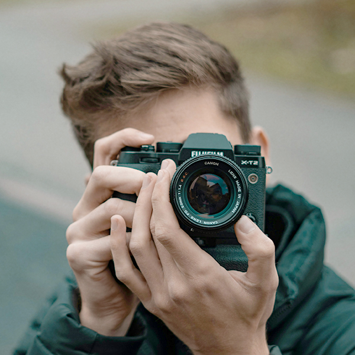
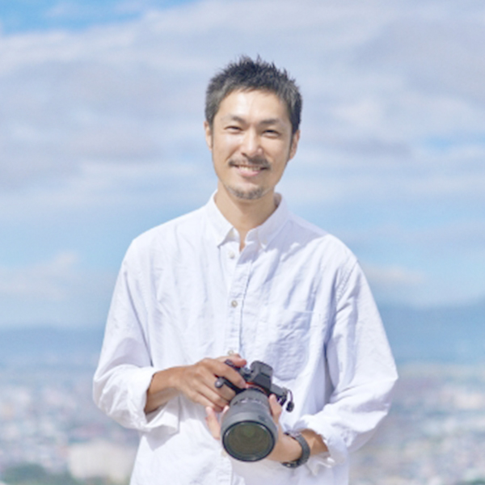
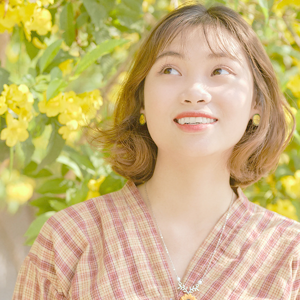
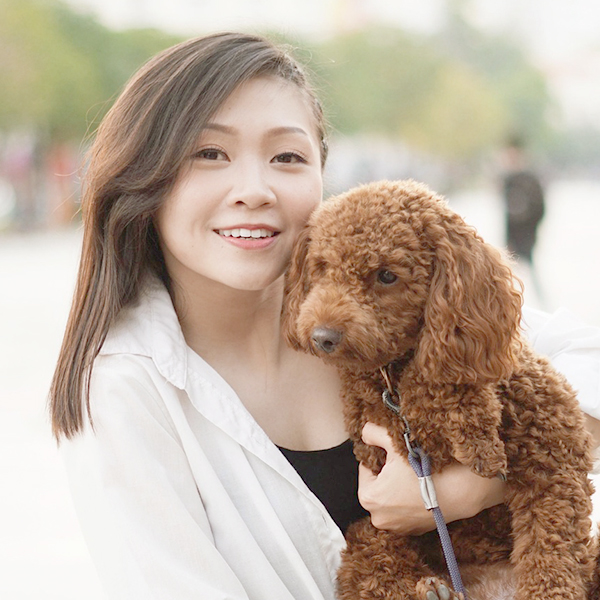
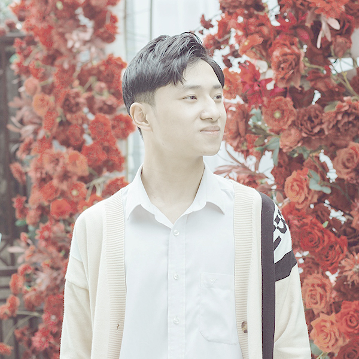

Taro Tanaka
確かな技術と深い眼差しで、おふたりのドラマチックな瞬間を切り取ります。光と影のコントラストを活かし、何年経っても色褪せない重厚感のあるポートレートが得意です。
得意なテイスト： チャペル / ドラマチック / シネマティック
何気ない会話を重ねながら、ふたりらしい自然な表情と温かな記憶を引き出すクリエイター陣をご紹介します。
それぞれの視点と哲学で、おふたりの特別な一日を物語に仕立てます。
確かな技術と深い眼差しで、おふたりのドラマチックな瞬間を切り取ります。光と影のコントラストを活かし、何年経っても色褪せない重厚感のあるポートレートが得意です。

歴史ある空間や美しい自然ロケーションを活かし、空気感まで写し取るような深みのあるポートレートに仕立てます。自然体の笑顔を引き出す穏やかなコミュニケーションが好評です。

おふたりの日常の延長線上にるような、リラックスした空気感を大切にしています。ふとした瞬間に交わす視線や、いつもの優しい笑顔をそのまま写真に残します。

「何年先も見返したくなる、あたたかな一枚を一緒につくりましょう」。女性ならではの繊細な視点で、ドレスの裾の広がりやふたりの温かな手の温もりを優しくすくい取ります。

ふとした瞬間にこぼれる、飾らない美しさを引き出すのが得意です。撮影中であることを忘れてしまうような楽しい会話を通じて、内面からにじみ出る魅力を捉えます。

やわらかな光と優しい色彩で、大切な一日を物語のように綴ります。トレンドを取り入れたスタイリッシュな構図と、透明感あふれるトーンメイクが若い世代に大人気です。
kyouritz photo studioでは、おふたりの好みのテイストや、人柄の相性に合わせてカメラマンをご指名いただくことが可能です。
「こんな雰囲気の写真が好き」「人見知りなので話しやすい人がいい」など、どんな些細なご希望でもお気軽にご相談ください。
無料試着会やカウンセリングの際にも、最適なクリエイターのご提案や過去の作品集をご覧いただけます。